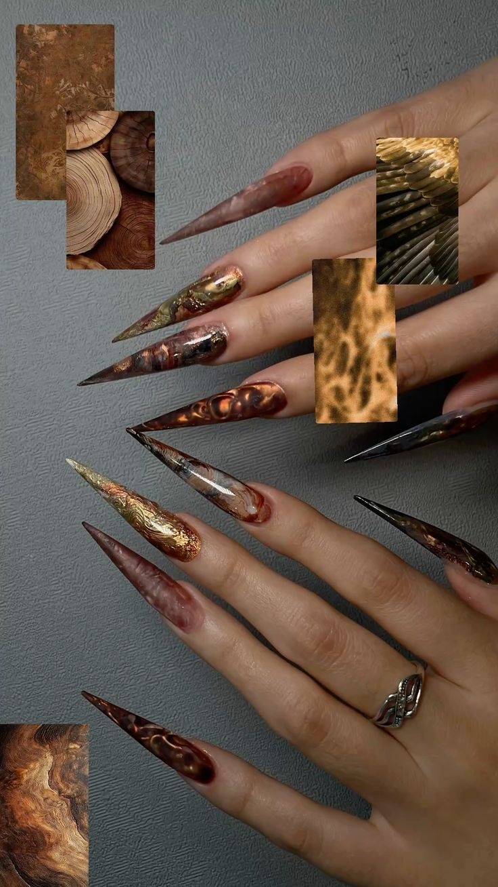

JPG Nail Arts
This page shows an example of a JPG image using nail art.

I chose this image because I really like the design and I would actually wear these nails. I think they look really nice and would be something I could wear for an important event.
JPG is a common image file type that works well for photographs and images with many colors.
Source:Pinterest